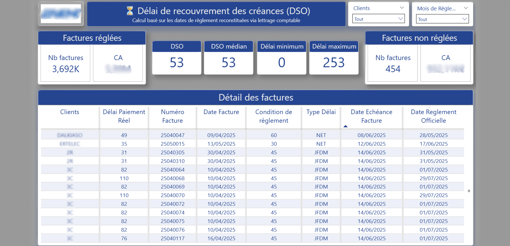

Projets sélectionnés
Réalisations clients
Des missions concrètes, avec des résultats mesurables. Chaque projet reflète une approche rigoureuse de la donnée.
1 / 3
- Courbe CA mensuel et YTD sur 3 exercices fiscaux (N/N-1/N-2) avec variations € et % — consolidation Sage 100 + Batigest via ODBC
- Mix d'activité Fourni vs Fourni-Posé : répartition globale, évolution mensuelle, analyse par bureau et par représentant
- Suivi clients : top clients, contribution au CA, évolution mensuelle — filtres dynamiques (année fiscale, bureau, type de vente)
- Encours clients : statut réglé / échu / en cours avec calcul des jours de retard
- DSO par client : délai moyen de règlement, nb de factures réglées/non réglées, délai min & max
2 / 3
- Fiabilisation de la donnée comptable Sage 100 avant toute analyse — concordance au centime près avec le grand livre
- Suivi des charges externes (6xx) par fournisseur, catégorie, compte et période fiscale — détection des pièces atypiques
- Analyse détaillée des achats MP et approvisionnements (601/602/607) en N/N-1/N-2
- SIG dynamique multi-années fiscales (EBE, Résultat Net, Marge brute) avec logique fiscale 01/04–31/03
- Pilotage YTD vs année complète, comparaison N/N-1/N-2 avec ratios CE/CA
3 / 3
- Suivi quotidien des lots (Gaine, Plenum) avec calcul du taux d'avancement réel basé sur les étapes effectivement réalisées
- Identification des lots bloqués ou en stagnation — alertes visuelles sur retards via dates de livraison et de fabrication
- Historisation automatique par snapshots journaliers — analyse des tendances et anticipation des saturations
- Calcul des jours ouvrés de stockage, catégorisation des statuts, suivi des capacités par groupe (Gaine, Plenum)
- Outil 100% automatisé, adopté immédiatement par les équipes grâce à un design orienté métier
Aperçu des rapports Power BI
Cliquez sur une image pour l'agrandir

Charges Externes — Synthèse N / N-1 / N-2

SIG & Charges Externes

CA — Fourni vs Fourni-Pose

CA par Bureaux

DSO — Suivi des créances
✕